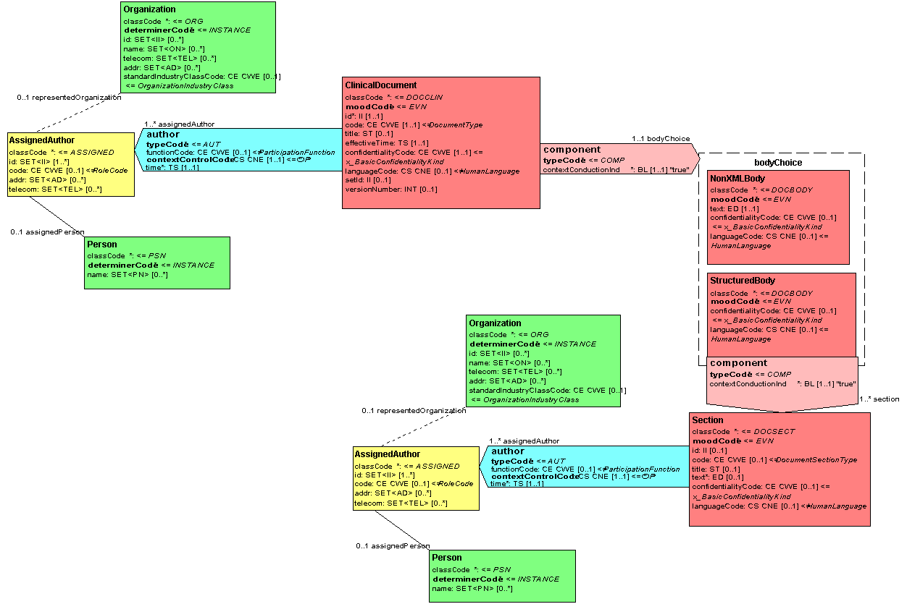

Overview - Clinical Document Architecture v2.0.1-sd-202510-matchbox-patch
- Table of Contents
- Overview
Overview
What is the CDA
The HL7 Clinical Document Architecture (CDA) is a document markup standard that specifies the structure and semantics of "clinical documents" for the purpose of exchange. A clinical document is a documentation of clinical observations and services, with the following characteristics:
- Persistence – A clinical document continues to exist in an unaltered state, for a time period defined by local and regulatory requirements (NOTE: There is a distinct scope of persistence for a clinical document, independent of the persistence of any XML-encoded CDA document instance).
- Stewardship – A clinical document is maintained by an organization entrusted with its care.
- Potential for authentication - A clinical document is an assemblage of information that is intended to be legally authenticated.
- Context - A clinical document establishes the default context for its contents.
- Wholeness - Authentication of a clinical document applies to the whole and does not apply to portions of the document without the full context of the document.
- Human readability – A clinical document is human readable.
A CDA document is a defined and complete information object that can include text, images, sounds, and other multimedia content.
Key aspects of the CDA
Key aspects of the CDA include:
- CDA documents are encoded in Extensible Markup Language (XML). (NOTE: When alternate implementations are feasible, suitable conformance requirements will be issued so that in future the syntax may not be limited to XML.)
- CDA documents derive their machine processable meaning from the HL7 Reference Information Model (RIM) and use the HL7 Version 3 Data Types.
- The CDA specification is richly expressive and flexible. Document-level, section-level and entry-level templates can be used to constrain the generic CDA specification (see The "A" in "CDA").
Scope of the CDA
The scope of the CDA is the standardization of clinical documents for exchange.
The data format of clinical documents outside of the exchange context (e.g., the data format used to store clinical documents) is not addressed in this specification.
CDA documents can be transmitted in HL7 messages designed to transfer clinical documents. While the detailed specification for such messages is outside of the scope of the CDA, this specification does impose requirements upon the packaging of CDA documents in HL7 messages.
The CDA does not specify the creation or management of documents, only their exchange markup. While it may be possible to directly use the CDA Schema in a document authoring environment, such use is not the primary purpose of the CDA specification.
Document management is critically interdependent with the CDA specifications, but the specification of document management messages is outside the scope of the CDA. (For more on this, see Relationship of the CDA to HL7 Messaging Standards).
NOTE:Several committees are developing structured document specifications that overlap in part with the CDA specification. The Structured Documents Technical Committee, in collaboration with Publishing and these other committees, is developing a Structured Documents Infrastructure chapter to clarify these relationships which should be available in upcoming editions.
Goals and Design Principles
The goals of the CDA are:
- Give priority to delivery of patient care.
- Allow cost effective implementation across as wide a spectrum of systems as possible.
- Support exchange of human-readable documents between users, including those with different levels of technical sophistication.
- Promote longevity of all information encoded according to this architecture.
- Enable a wide range of post-exchange processing applications.
- Be compatible with a wide range of document creation applications.
- Promote exchange that is independent of the underlying transfer or storage mechanism.
- Prepare the design reasonably quickly.
- Enable policy-makers to control their own information requirements without extension to this specification.
A number of design principles follow from consideration of the above goals:
- This architecture must be compatible with XML and the HL7 RIM.
- This architecture must be compatible with representations of clinical information arising from other HL7 committees.
- Technical barriers to use of the architecture should be minimized.
- The architecture specifies the representation of instances required for exchange.
- The architecture should impose minimal constraints or requirements on document structure and content required for exchange.
- The architecture must be scalable to accommodate fine-grained markup such as highly structured text and coded data.
- Document specifications based on this architecture should accommodate such constraints and requirements as supplied by appropriate professional, commercial, and regulatory agencies.
- Document specifications for document creation and processing, if intended for exchange, should map to this exchange architecture.
- CDA documents must be human readable using widely-available and commonly-deployed XML-aware browsers and print drivers and a generic CDA style sheet written in a standard style sheet language.
- Use open standards.
General CDA Concepts
Major Components of a CDA Document
This section serves as a high-level introduction to the major components of a CDA document, all of which are described again and in greater detail later on. The intent here is to familiarize the reader with the high-level concepts to facilitate an understanding of the sections that follow.
Major components of a prototypic CDA document are shown in the following skeletal example. (Note that many required components are missing to simplify the example. See Examples for a detailed conformant example).
A CDA document is wrapped by the <ClinicalDocument> element, and contains a header and a body. The header lies between the <ClinicalDocument> and the <structuredBody> elements, and identifies and classifies the document and provides information on authentication, the encounter, the patient, and the involved providers.
The body contains the clinical report, and can be either an unstructured blob, or can be comprised of structured markup. The example shows a structured body, which is wrapped by the <structuredBody> element, and which is divided up into recursively nestable document sections.
A CDA document section is wrapped by the <section> element. Each section can contain a single narrative block (see Section Narrative Block), and any number of CDA entries and external references.
The CDA narrative block is wrapped by the <text> element within the <section> element, and must contain the human readable content to be rendered. See also Human Readability and Rendering CDA Documents and CDA Conformance for principles governing the representation of the narrative block, and conformance requirements on the part of originators when populating the block, and recipients when rendering it.
Within a document section, the narrative block represents content to be rendered, whereas CDA entries represent structured content provided for further computer processing (e.g. decision support applications). CDA entries typically encode content present in the narrative block of the same section. The example shows two <observation> CDA entries, and a <substanceAdministration> entry containing a nested <supply> entry, although several other CDA entries are defined.
CDA entries can nest and they can reference external objects. CDA external references always occur within the context of a CDA entry. External references refer to content that exists outside this CDA document - such as some other image, some other procedure, or some other observation (which is wrapped by the <externalObservation> element). Externally referenced material is not covered by the authentication of the document referencing it.
Example 1
<ClinicalDocument>
... CDA Header ...
<structuredBody>
<section>
<text>...</text>
<observation>...</observation>
<substanceAdministration>
<supply>...</supply>
</substanceAdministration>
<observation>
<externalObservation>...
</externalObservation>
</observation>
</section>
<section>
<section>...</section>
</section>
</structuredBody>
</ClinicalDocument>
The "A" in "CDA"
The notion of CDA "levels" in CDA, Release One anticipated a hierarchical set of XML DTDs or XML Schemas to achieve the goals enumerated above (see Goals and Design Principles). This hierarchy formed an "architecture", hence the "A" in "CDA".
While the notion of levels in CDA, Release Two remains constant, the approach to representing the hierarchies has changed. The current specification consists of a single CDA XML Schema, and the architecture arises from the ability to apply one or more of a hierarchical set of HL7 Templates, which serve to constrain the richness and flexibility of CDA.
NOTE:The CDA can be constrained by mechanisms defined in HL7 V3 Refinement and Localization. HL7 technical formalisms (e.g. HL7 Template specifications, HL7 Model Interchange Format) to constrain CDA are still in development at the time of writing this standard.The RIM's InfrastructureRoot class contains an attribute, templateId, which is available for use in CDA. Thus, while HL7 Templates are in flux at this time, CDA provides a mechanism to reference a template or implementation guide that has been assigned a unique identifier. Until there is a formal HL7 Template specification, there is no standardized process to test conformance against referenced templates.There is no requirement that CDA must be constrained. Implementations that use structured data elements to drive automated processes will typically require that they be either: (1) constrained by an appropriately refined model or other HL7 approved constraint language; or (2) comply with a detailed implementation guide that details the manner in which structured elements are to be represented and their intended interpretation to a level sufficient to ensure a degree of clinical safety that is appropriate to the use case that it is designed to address.
There are many kinds of HL7 Templates that might be created. Among them, two are particularly relevant for clinical documents: (1) those that constrain the document sections based on the type of document (section-level templates); (2) those that constrain the entries within document sections (entry-level templates). In fact, a comparison can be made between the prior notion of CDA levels and the current notion of CDA with these two kinds of HL7 Templates:
Table 1: Evolution of CDA "levels" from CDA, Release One to CDA, Release Two
| CDA Level One | The unconstrained CDA specification. |
| CDA Level Two | The CDA specification with section-level templates applied. |
| CDA Level Three | The CDA specification with entry-level (and optionally section-level) templates applied. |
An illustration of one possible hierarchy of CDA plus HL7 Templates is shown here:
Example 2
- CDA Schema
- CDA Schema :: Progress Note section-level template applied.
- CDA Schema :: Progress Note section-level and Vital Signs entry-level template applied.
- CDA Schema :: Endocrinology Progress Note section-level and Vital Signs entry-level template applied.
-
CDA Schema :: Progress Note section-level and ICU Vital Signs entry-level template applied.
-
CDA Schema :: Cardiology Progress Note section-level template applied
-
CDA Schema :: Cardiology Progress Note section-level and Cardiac Exam entry-level template applied.
-
CDA Schema :: Endocrinology Progress Note section-level template applied.
- CDA Schema :: Endocrinology Progress Note section-level and Vital Signs entry-level template applied.
Human Readability and Rendering CDA Documents
The CDA requirement for human readability guarantees that a receiver of a CDA document can algorithmically display the clinical content of the note on a standard Web browser. CDA, Release Two, with its blend of narrative and CDA entries, presents new challenges to this requirement.
Among the requirements affecting the design of CDA Release 2 are the following:
- There must be a deterministic way for a recipient of an arbitrary CDA document to render the attested content.
- Human readability shall not require a sender to transmit a special style sheet along with a CDA document. It must be possible to render all CDA documents with a single style sheet and general-market display tools.
- Human readability applies to the authenticated content. There may be additional information conveyed in the document that is there primarily for machine processing that is not authenticated and need not be rendered.
- When structured content is derived from narrative, there must be a mechanism to describe the process (e.g. by author, by human coder, by natural language processing algorithm, by specific software) by which machine-processable portions were derived from a block of narrative.
- When narrative is derived from structured content, there must be a mechanism to identify the process by which narrative was generated from structured data.
These principles and requirements have led to the current approach, where the material to be rendered is placed into the Section.text field (see Section Narrative Block). The content model of this field is specially hand crafted to meet the above requirements, and corresponds closely to the content model of sections in CDA, Release One. Structured observations can reference narrative content in the Section.text field. Multimedia observations are encoded outside the Section.text field, and the <renderMultiMedia> tag within the Section.text field provides an outgoing pointer that indicates where the referenced multimedia should be rendered.
XML Markup of CDA Documents
XML markup of CDA documents is prescribed in this specification. CDA instances are valid against the CDA Schema and may be subject to additional validation (see CDA Conformance). There is no prohibition against multiple schema languages (e.g., W3C, DTD, RELAXNG), as long as conforming instances are compatible.
Design Principles of the CDA Schema include:
- General Requirements: The design of the CDA Schema follows the more general requirements for CDA (see Goals and Design Principles).
- CDA Schema and V3 Implementation Technology Specification (ITS) : The CDA Schema will follow the general V3 XML ITS.
- RIM Mapping: The CDA Schema describes the style of XML markup of CDA instances for the purpose of exchange. It cannot be understood outside the context of this defining specification. At the same time, the CDA Schema is useful on its own for implementation purposes even though it is not intended to replicate or take the place of the R-MIM and HD. The CDA Schema, then, is not, in and of itself, an adequate map between conforming instance and the HL7 RIM. Semantic interoperability of CDA instances requires use and knowledge of the CDA Schema, R-MIM and HD as well as the corresponding RIM.
- Document Analysis: The CDA Schema and conformant instances should adhere to the requirements of document analysis in derivation of the content model.
NOTE: Document analysis is a process that might be thought of as the document equivalent of a use case. Document analysis looks at a single instance or class of documents and analyzes their structure and content, often representing this as a tree structure "elm" notation. Document analysis also looks at the business rules for the lifecycle of that document or document class. Traditionally, document analysis determines the content model and overall structure and style of XML.
Document analysis is an iterative step in content model derivation – the "bottom up" approach to complement the "top down" derivation from the RIM. This will ensure that schemas and instances are not only RIM-derived, but represent recognizable artifacts in a simple manner. * Forward and Backward Compatibility: The CDA Schema should adhere to the requirements for forward and backward compatibility. (See Backwards and Forwards Compatibility) * Naming: While XML markup, by definition, is for machine processing, it should be optimized for human review, debug, and design. The CDA Schema is not "self-documenting", but meaning should be clear from tag name and documentation (e.g., mapping to RIM). The human-language sense of a tag name should not be counterintuitive. * Vocabulary: Vocabulary can be enumerated within the CDA Schema or in an external, referenced source. It is preferable to enumerate it when the vocabulary terms are both limited (not too large in number) and stable (not subject to change between ballot cycles). Where vocabulary is either too large or is subject to change, it is preferable to maintain it external to the CDA Schema and incorporate it by reference. In these cases, XML schema validation will not suffice for conformance.
Security, Confidentiality, and Data Integrity
Application systems sending and receiving CDA documents are responsible for meeting all legal requirements for document authentication, confidentiality, and retention. For communications over public media, cryptographic techniques for source/recipient authentication and secure transport of encapsulated documents may be required, and should be addressed with commercially available tools outside the scope of this standard.
The CDA does provide confidentiality status information to aid application systems in managing access to sensitive data. Confidentiality status may apply to the entire document or to specified segments of the document.
Relationship of the CDA to HL7 Messaging Standards
A CDA document is a defined and complete information object that can exist outside of a messaging context and/or can be a payload within an HL7 message. Thus, the CDA complements HL7 messaging specifications.
Clinical documents can be revised, and they can be appended to existing documents. Ideally, an updated document would declare itself as obsolete, and would contain an explicit pointer to a more recent version. This would lessen the chances of a healthcare provider basing treatment decisions on erroneous or incomplete data.
In practice, however, it is impossible to guarantee an explicit forward pointer from an outdated version to the newer version. Without a process that tracks the chain of custody of clinical documents and all of their copies, there can be no way to guarantee that a clinical document being viewed has not been subsequently revised.
To minimize the risk of viewing superseded information, there is a critical interdependence between clinical documents and document management systems. If CDA documents are viewed outside the context of a document management system, it cannot be known with certainty whether or not the viewed document has been revised. HL7 messages that carry CDA documents (such as the MDM messages in HL7 V2.x and the HL7 V3 Medical Records messages) convey critical contextual information that ensures accurate viewing of clinical data.
CDA Conformance
NOTE:See HL7 V3 Refinement and Localization for a complete discussion of V3 conformance.
A conformant CDA document is one that at a minimum validates against the CDA Schema, and that restricts its use of coded vocabulary to values allowable within the specified vocabulary domains. However a computer cannot validate every aspect of conformance. The focus of this section is to highlight these aspects of CDA that cannot be machine validated - particularly those aspects related to the CDA human readability requirements.
A document originator is an application role that creates a CDA document. CDA documents can be created via transformation from some other format, as a direct output of an authoring application, etc. The document originator often is responsible for communicating with a persistent storage location, often using HL7 V2 MDM or HL7 V3 Medical Records messages. The document originator is responsible for ensuring that generated CDA documents are fully conformant to this specification.
A document recipient is an application role that receives status updates and documents from a document originator or document management system. The document recipient is responsible for ensuring that received CDA documents are rendered in accordance to this specification.
Because CDA is an exchange standard and may not represent the original form of a document, there are no persistent storage requirements for CDA documents defined in this standard. However, as noted above (see Relationship of the CDA to HL7 Messaging Standards), document management is critically interdependent with the CDA specification. The custodian identified in the CDA header is the participant charged with maintaining the original document, which may be in some form other than CDA.
Recipient Responsibilities
- Assume default values where they are defined in this specification, and where the instance does not contain a value : Where CDA defines default values, the recipient must assume these values in the event that no value is contained in a CDA instance. (NOTE: Default values are indicated in this implementation guide by a fixed value on an element or attribute with a minimum cardinality of 0.)
- Parse and interpret the complete CDA header : A recipient of a CDA document must be able to parse and interpret the complete CDA header. Because applications may choose to display demographic and other CDA header data drawn from a central master directory, the rendering of the CDA document header is at the discretion of the recipient. In addition, rendering of the CDA document header can be dependent on local business practice and context of use (e.g. electronic health record, de-identified scenario). Where a document originator wants to suggest a rendering, they can include one or more XML style sheets with an exchanged CDA document. Use of these style sheets is at the discretion of the recipient.
- Parse and interpret the CDA body sufficiently to be able to render it : A recipient of a CDA document must be able to parse and interpret the body of a CDA document sufficiently to be able to render it, using the following rendering rules:
- If the CDA Body is non-XML, it will need to be rendered with a software tool that recognizes its particular MIME media type.
- If the CDA Body is structured, the label of a section, as conveyed in the Section.title component, must be rendered. The absence of the Section.title component signifies an unlabeled section.
-
If the CDA Body is structured, the contents of the Section.text field must rendered per the rules defined in Section Narrative Block.
-
A recipient of a CDA document is not required to parse and interpret the complete set of CDA entries contained within the CDA body. Within a local implementation, trading partners may ascribe additional recipient responsibilities to parse and interpret various entries.
- A recipient of a CDA document is not required to validate a CDA document against referenced templates. Within a local implementation, trading partners may ascribe additional recipient responsibilities for template validation.
Originator Responsibilities
- Properly construct CDA Narrative Blocks : An originator of a CDA document must ensure that the attested portion of the document body is structured such that a recipient, adhering to the recipient responsibilities above, will correctly render the document. This includes:
- If the CDA Body is structured, the label of a section must be conveyed in the Section.title component. The absence of the Section.title component signifies an unlabeled section.
- If the CDA Body is structured, the attested narrative contents of a section must be placed in the Section.text field, regardless of whether information is also conveyed in CDA entries. Attested multimedia referenced in the narrative must be added as ObservationMedia and/or RegionOfInterest CDA entries.
-
If the CDA Body is structured, the contents of the Section.text field must be created per the rules defined in Section Narrative Block
-
An originator of a CDA document is not required to fully encode all narrative into CDA entries within the CDA body. Within a local implementation, trading partners may ascribe additional originator responsibilities to create various entries.
CDA Extensibility
Locally-defined markup may be used when local semantics have no corresponding representation in the CDA specification. CDA seeks to standardize the highest level of shared meaning while providing a clean and standard mechanism for tagging meaning that is not shared. In order to support local extensibility requirements, it is permitted to include additional XML elements and attributes that are not included in the CDA schema. These extensions should not change the meaning of any of the standard data items, and receivers must be able to safely ignore these elements. Document recipients must be able to faithfully render the CDA document while ignoring extensions.
Extensions may be included in the instance in a namespace other than the HL7v3 namespace, but must not be included within an element of type ED (e.g., <text> within <procedure>) since the contents of an ED datatype within the conformant document may be in a different namespace. Since all conformant content (outside of elements of type ED) is in the HL7 namespace, the sender can put any extension content into a foreign namespace (any namespace other than the HL7 namespace). Receiving systems must not report an error if such extensions are present.
When these extension mechanisms mark up content of general relevance, HL7 encourages users to get their requirements formalized in a subsequent version of the standard so as to maximize the use of shared semantics.
Backwards and Forwards Compatibility
The basic model of CDA, Release Two is essentially unchanged. A CDA document has a header and a body. The body contains nested sections. These sections can be coded using standard vocabularies, and can contain CDA entries. The main evolutionary steps in CDA, Release Two are that both header and body are fully RIM-derived, and there is a much richer assortment of entries to use within CDA sections. CDA, Release Two enables clinical content to be formally expressed to the extent that it is modeled in the RIM.
This section describes the types of changes that can be introduced to a new release of CDA and CDA principles of forward and backward compatibility. In general, changes can include the addition of new components; a renaming of components (including XML element and attribute names in the CDA Schema); a deprecation of components defined in a prior release; a change in cardinality of a component (either to tighten or to loosen); or a change in a vocabulary domain of a component (to add or change values, to change between CWE and CNE). The following set of guiding principles defines how CDA can continue to evolve, while protecting the investment implementers have made through their adoption of earlier releases.
- Documentation : A new release of CDA will enumerate all substantive changes from the previous release.
- Attested content: Attested, human readable content must be completely loss-less across CDA releases. Backwards and forwards compatibility on the attested content will be supported such that it will be possible for an automated transformation script to translate the human readable content in both directions.
- New components : A new release of CDA can introduce new components. To preserve roundtrip translation capability, a translation from the new release to a prior release must represent the new components as extensions (e.g. local markup or local namespace).
- Renaming : A new release of CDA can rename components (including XML element and attribute names). Where this occurs, a mapping table will list all changes. Renaming will adhere to the naming convention articulated above (see XML Markup of CDA Documents).
- Deprecated components : A new release of CDA can deprecate components defined in a prior release. Deprecated components will be removed from the subsequent release of the standard, and therefore their use is not recommended.
- Cardinality : A new release of CDA can change the cardinality of a component. Where an optional component becomes required, a translation between releases requires a dummy value or a null value.
- Changes to vocabulary domain : A new release of CDA can change the vocabulary domain of a component. Where this occurs, a mapping table will list changes.
- Change within CNE : Where a value in a CNE domain in a prior release is no longer present or has been renamed, a mapping table will indicate what the current value should be.
- Change within CWE : When a CWE domain is expanded, users should begin using the new codes in addition to any equivalent local codes they may already be using.
- Change from CWE to CNE : To preserve roundtrip translation capability, a translation between releases must represent unrecognized components as extensions (e.g. local markup or local namespace). Ideally these situations will surface during a ballot cycle, allowing the CNE domain to be sufficiently inclusive.
These guiding principles have lead to the current approach, defined in this Release Two of the CDA standard. The goal is to ensure that the documents created using Release One can be transformed into minimally compliant Release Two instances and that Release Two documents received can be down-translated to Release One instances using automated means (transformations) with no loss of attested, human-readable content and known limitation on loss of universal processing semantics.
CDA Context
CDA context is set in the CDA header and applies to the entire document. Context can be overridden at the level of the body, section, and/or CDA entry.
Overview of CDA Context
A document, in a sense, is a contextual wrapper for its contents. Assertions in the document header are typically applicable to statements made in the body of the document, unless overridden. For instance, the patient identified in the header is assumed to be the subject of observations described in the body of the document, unless a different subject is explicitly stated, or the author identified in the header is assumed to be the author of the entire document, unless a different author is explicitly identified on a section. The objective of the CDA context rules are to make these practices explicit with relationship to the RIM, such that a computer will understand the context of a portion of a document the same way that a human interprets it.
At the same time, there is no guarantee that machine processing will identify a mistaken application of contextual rules. If a physician records an "outside diagnosis" in narrative but does not nullify the "informant" context, machine processing will not identify the switch in attribution. This is a special case illustrating the limits of automated validation of electronic records and would apply regardless of the context inheritance mechanism. In other words, from some errors of encoding, there is no recovery other than human review.
CDA's approach to context, and the propagation of that context to nested document components, follows these design principles:
- CDA uses the RIM context mechanism (contextControlCode for Participations; contextConductionInd for ActRelationships), and assigns fixed values to these attributes to accomplish the design objectives below, thus constraining the RIM context model. CDA extends the context propagation property to designated attributes of the CDA Header, which also propagate through any ActRelationship for which contextConductionInd="true".
- The CDA Header sets context for the entire document. A propagating value specified in the document header holds true throughout the document, unless explicitly overridden. This principal applies to both Participations and to designated attributes of the CDA Header. Contextual header components (i.e., those that have propagating values) include:
- Author
- Confidentiality
- Data enterer
- Human language
- Informant
- Legal authenticator
- Participant
-
Record target
-
Context components that can be overridden at the level of the document body include:
- Confidentiality
-
Human language
-
Context components that can be overridden at the level of a document section include:
- Author
- Confidentiality
- Human language
- Informant
-
Subject
-
Context components that can be overridden at the level of a CDA entry include:
- Author
- Human language
- Informant
- Participant
-
Subject
-
Context propagates from outer tags to nested tags. Context that is specified on an outer tag holds true for all nested tags, unless overridden on a nested tag. Context specified on a tag within the CDA body always overrides context propagated from an outer tag. For instance, the specification of authorship at a document section level overrides all authorship propagated from outer tags.
- Context is sometimes known precisely, and is sometimes unknown, such as in the case where a document is comprised of a large unparsed narrative block that potentially includes statements that contradict outer context. Because CDA context always propagates unless overridden, the representation of unknown context is achieved by overriding with a null value.
Technical Aspects of CDA Context
The RIM defines the "context" of an act as those participants of the act that can be propagated to nested acts. In the RIM, whether or not contextual participants do propagate to nested acts depends on whether or not the intervening act relationship between parent and child act allows for conduction of context. The explicit representation of context, and whether or not the context on an act can propagate to nested acts, is expressed via the RIM attributes Participation.contextControlCode and ActRelationship.contextConductionInd. CDA constrains the general RIM context mechanism such that context always overrides and propagates, as shown in the following table.
| Participation.contextControlCode | 1..1 | Mandatory (NULL values not permitted) | "OP" (overriding, propagating) |
| ActRelationship.contextConductionInd | 1..1 | Mandatory (NULL values not permitted) | "true"* |
- The one exception to this is entryRelationship.contextConductionInd, which is defaulted to "true", but can be changed to "false"
Where the context of a nested component is unknown, the propagated context must be overridden with a null-valued component, as shown in the following table.
| Author | AssignedAuthor.id = NULL | No playing entity; No scoping entity. |
| Confidentiality | confidentialityCode = NULL | |
| Human language | languageCode = NULL | |
| Informant | AssignedEntity.id = NULL | No playing entity; No scoping entity. |
| Participant | ParticipantRole.id = NULL | No playing entity;No scoping entity. |
The following exhibit illustrates the CDA context model. ClinicalDocument has an author participant, a confidentialityCode, and a languageCode, all of which will propagate to nested acts. The component act relationship going from ClinicalDocument to bodyChoice has contextConductionInd fixed as "true", thus allowing for the propagation of context. The bodyChoice classes, NonXMLBody and StructuredBody, contain a confidentialityCode and languageCode which can be used to override the value specified in the header. The component act relationship going from StructuredBody to Section has contextConductionInd fixed at "true", thus the context on StructuredBody will propagate through to Section. Section can override confidentialityCode, languageCode, and author. A null value for the Section's author participant indicates that the author for that particular section is unknown.

Because context is always overriding and propagating, one can compute the context of a given node by looking for the most proximate assertion. The following example is a sample XPath expression that can be used to identify the <author> context of a section or entry:
(ancestor-or-self::*/author)[position()=last()]